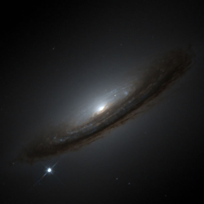

Observationally, astronomers originally classed supernovae into two “types”, I and II. Type I had no Hydrogen emission lines in their spectra whereas Type II exhibited Hydrogen emission lines. Later it was realised that there were in fact three quite distinct Type I supernovae, now labelled Type Ia, Type Ib and Type Ic.
Type Ia supernovae (SNIa) are thought to be the result of the explosion of a carbon-oxygen white dwarf in a binary system as it goes over the Chandrasehkar limit, either due to accretion from a donor or mergers. They are the brightest of all supernovae with an absolute magnitude of MB ~ -19.5 at maximum light, occur in all galaxy types, and are characterised by a silicon absorption feature (rest wavelength = 6355 angstroms) in their maximum light spectra. They can eject material at speeds of the order of 10,000 km/s and outshine an entire galaxy at their peak brightness.
Originally thought to be standard candles where every SNIa had the same peak brightness, it has been shown that this is close to the truth, but not quite. SNIa exhibit brightnesses at maximum that range from about +1.5 to -1.5 magnitudes around a typical SNIa. It has also been shown that the over or under luminosity of these objects is correlated to how quickly the Type Ia light curve decays in the 15 days after maximum light in the B band. This is known as the luminosity – decline rate relation and is the underlying concept which turns SNIa into one of the best distance indicators available to astronomers.